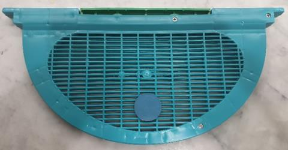

I wrote a column for the November 2025 ABJ with the flippant title “Breaking Good”.1 It described some of the various cages available for isolating a queen, either to stop her laying or to confine the brood to a frame for subsequent removal. This in combination with a flash phoretic mite treatment such as oxalic acid provides an effective mite kill. Whilst perhaps too time consuming for the commercial operator with hundreds or thousands of hives, this approach is well suited to the beekeeper with only a handful. Since then, I’ve come across some further refinements that are worthy of discussion.
The No-Look Break
At the recent VAA Annual Conference, Théotime Colin from Macquarie University gave a presentation on reducing reliance on chemicals for varroa management. The recording is now available on the VAA YouTube channel and describes using sensors and mechanical varroa controls.2 His colleague, Casey Forster, also described what struck me as a brilliantly simple way of performing a brood break (see the video at the 16 minute mark). Three queen excluders are inserted vertically between the brood frames, isolating them into 4 groups of 2 frames. There is no need to locate the queen — she will be confined in one of the chambers.
Twenty-four days later, the 2 frames with brood are identified and removed for disposal of the contents (mites!) and replaced with new comb or foundation. The excluders are removed and a flash oxalic acid treatment is given to kill phoretic mites. The advantage of this technique is that only 2 apiary visits are required, the queen need not be located and once again, nearly all mites are terminated. In preparation, the (plastic) excluders will need trimming to ensure they fit snugly in your boxes. If you use 10 frame boxes, you could either use 4 excluders, or I’m sure groupings of 2×3 and 1×4 frames would be effective.
The Winter Break
I worry about winter! In much of our Australian climate, colonies will raise brood continuously and will not benefit from a natural winter brood break. We know this break is beneficial in slowing varroa mite reproduction. Indeed, when I model mite numbers using either Randy Oliver’s spreadsheet3 or the VarroaMate planner,4 I find that mite counts that are low at the start of winter climb alarmingly by the beginning of spring. While your bees are not-so-safely packed down, mite numbers are building.
The Chmara isolator is named after its inventor. This device confines the queen in a 10 mm space between two plastic excluders about the size of a brood frame. This is too narrow a gap for the bees to build comb so the queen cannot lay eggs, but the bees can still access and care for her. A Polish research group has described how they successfully confined the queen throughout the whole winter, which in their case was as long as six months!5 Despite this lengthy incarceration, they reported only one queen loss from 39 colonies studied over three years.
Furthermore, in the spring, when the queens were released, these colonies reared 25% more brood than control colonies that had not had isolated queens. The explanation provided for this (to me) unexpected finding is that in its absence, there is no need to warm and feed brood — the winter bees do less work, survive longer and are less susceptible to disease.

Is this relevant to us in Australia? This study suggests we could confine our queens for, say, a couple of months without significant downside. Here in Melbourne, a likely schedule would be to cage the queen on 1 June. At least three weeks later all brood will have emerged, so an oxalic acid dribble or vaporisation will eliminate practically all mites. Timing is not critical; any time over the next week or so will be fine, and convenience and weather can dictate. Release of the queen a month later on 1 August will allow spring buildup to commence. The new season starts with low mites and healthy bees!
The good news is that if, like me, you wish to try this, the Technoset queen isolator with the 10 mm space is commercially available from BeequipNZ or here in Victoria from BuzzBee.
Beekeeping has changed and it’s going to take an amalgam of treatments for your bees to survive next year’s varroa onslaught. Embracing some of these new strategies could be the difference.
Andrew Wootton is Vice President of the VAA and a certified master beekeeper with the Eastern Apicultural Society of North America. He first started beekeeping in the 1960s.
1. Wootton, A., 2025. Breaking Good. Australian Bee Journal, 106(11), 20–21.
2. Colin, T., 2026. Varroa control: reducing chemical reliance.
3. Oliver, R., 2026. Randy’s varroa model, scientificbeekeeping.com.
4. VarroaMate Pty Ltd, varroamate.com/planner.
5. Gąbka, J., Gąbka, J. & Zajdel, B., 2025. Effect of Autumn and Winter Brood Interruption… Journal of Apicultural Science, 69(1), 63–66.